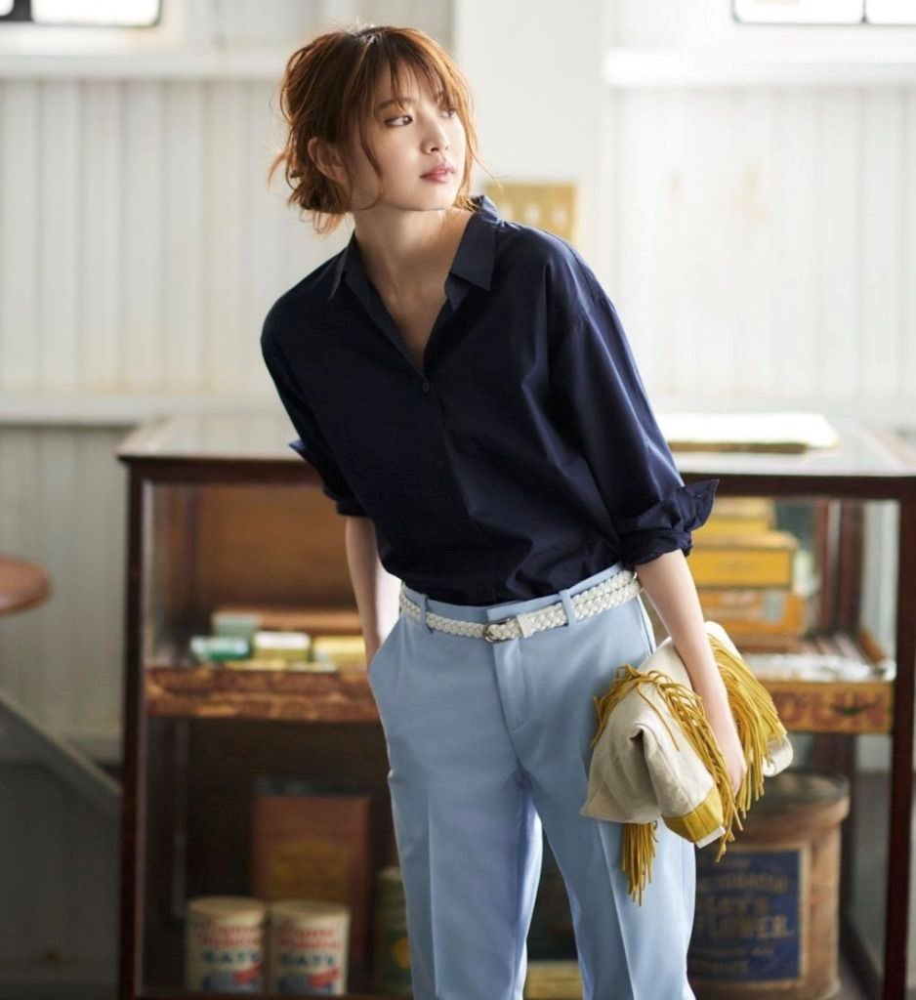
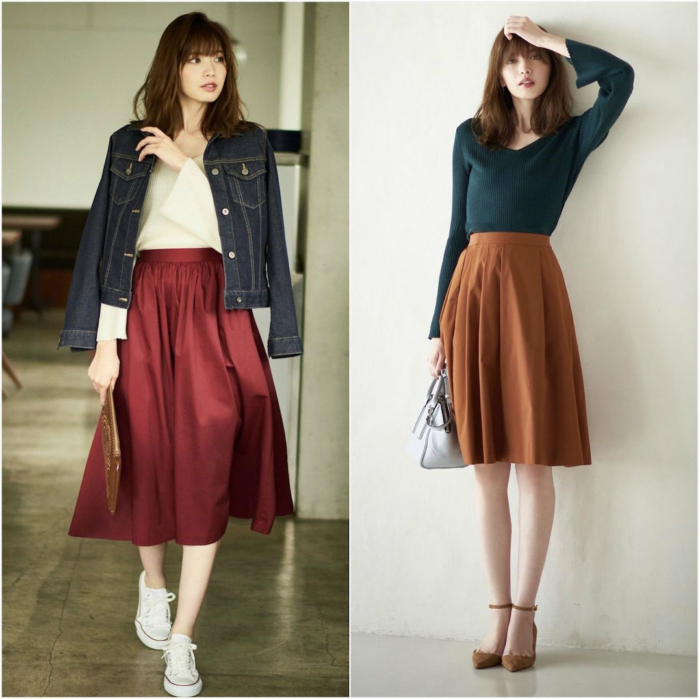
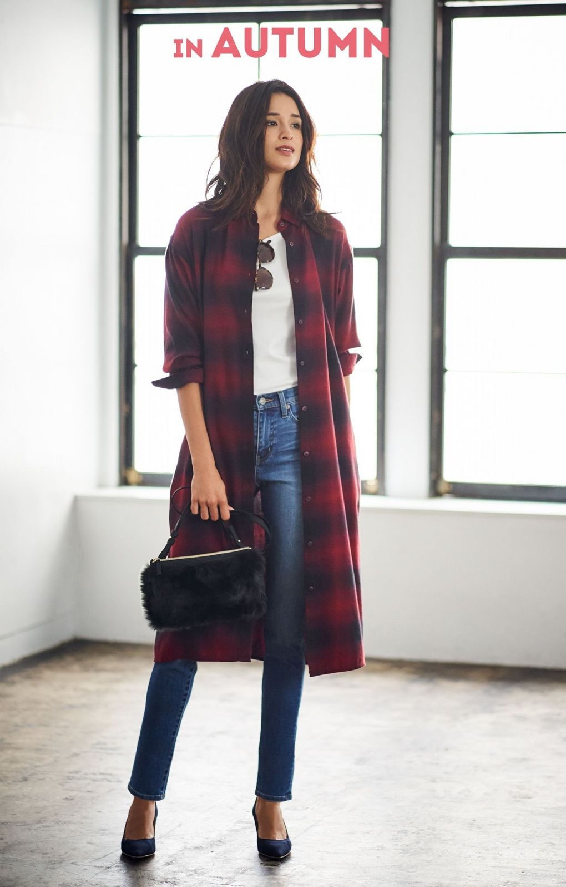
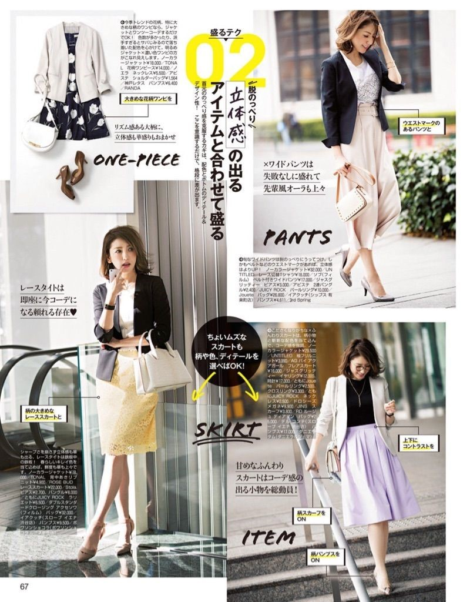

论穿衣风格，不知道你们更喜欢日系的还是欧美的呀？
对于我来说，两种风格都会穿插着去尝试，但在心里面，显然会更偏爱日系风~每当闲下来的时候逛日本的街拍网站，翻日本的时尚杂志，已经成了我生活中雷打不动的乐趣~
一张张日此穿搭图都会让我忍不住疯狂地赞叹：虽然里T台上最in的潮流离了十万八千里，但胜在简单大方不沉闷，自然又得体，美得恰到好处~这不就是我们亚洲女孩子日常穿搭的范本嘛！
其实日系穿衣的风格还挺广泛的啦，很难笼统地去概括日系穿衣有哪些必备单品。其中最受欢迎的风格，还当属日系通勤风。
记得我刚接触日本时尚杂志的时候，就常常发现，有一些穿搭，比起传统的职业装不再那么刻板沉闷，多了一份随性自然，却依旧干练大方~实在是赏心悦目！
穿成这样的日系通勤风这样去上班，还会怕美不过同事吗？
好，下面的日系通勤单品攻略，就是我再翻过无数张图后，结合自己的体验总结出来的，主要是秋天的单品啦。如果你和我一样也迷恋日系通勤穿衣风格，相信一定能帮你解决不少烦恼！
一、上衣
秋天到了，那些压箱底的长袖T恤和针织衫，统统都要被重新审视了喂~
不管是十年前还是现在，日系女装品牌的秋季款里，一定少不了的单品，当属修身T恤和针织衫。夏末秋初的时节里是T恤当道，等天气凉下来了就轮到针织衫咯。
而且，针织衫里，除了最常见的款式外，带扣的修身开衫在日系穿搭里出镜率相当高！
平时我们可能都习惯了将短开衫作为外搭，但其实直接穿在身上也是很不错的一种穿法来着~
日系穿衣里，不管是T恤还是针织衫，凡是修身上衣，其实精髓全都在领口这儿。
记住两种领口就好：V领和一字领：
什么大圆领小圆领从来都不属于日系风，要知道一旦领口弄错了，那可就和日系风无缘咯。
另外，强烈建议穿修身款上衣的时候来一点饰品点缀一下脖子，妥妥的能给人增色不少。注意！两种领口适合的饰品可是不一样的哦~
V领上衣通常都会显得脖子比较空旷。如果是夏天里大可以配一条锁骨链，美得清清爽爽。但秋冬季节里戴细细的锁骨链是不是会太不起眼了？
没事，反正有丝巾来帮忙！不仅填充了领口的空白，而且相当优雅：
一字领上衣通常都和长项链搭配比较合适，这样在视觉上就能形成一横一纵的线条，错落有致。项链的长度在胸部以下会刚刚好~
2. 衬衫
曾经一个好友煞有其事地和我讨论日系穿搭里的衬衫是怎样怎样……我当时还有点儿不屑一顾：不就是普普通通的一件衬衫嘛，和普通衬衫相比，我就不信日系风的衬衫还能玩出什么花样。
其实真不能这么说。在我们眼里，正儿八经的职业装衬衫太死板，而不少欧美风的衬衫又太过放飞自我……
再看看日系里的呢？第一眼就强烈感觉到：这宽松度可是刚刚好，而且精神、干练。

没错，想要挑到这样感觉的衬衫，其实关键在于衬衫的领口，形成两个V字形。不仅前面要有，而且衣领处也不会紧贴着脖子，往下也形成了了一个V字形：
记住这两个V字形，挑对日系风的衬衫就成功了一大半。
在搭配下装时，日系风衬衫也有自己的特点~
衬衫的前面会全部扎进下装里，这样从前面看的确修身又精神：

但衬衫的后面通常都只扎一部分到下装里。从侧面和后面看，后背就是宽松、有膨胀感，充满了悠闲慵懒的调调。
二、下装
有人说日系品牌里的阔腿裤都很有通勤的feel，但我可不这么认为哦。有些阔腿裤是休闲风，有些很软萌：
其实，要想把裤子穿出通勤范，不管是阔腿裤还是九分裤，是一定要满足两点的：
裤子面料垂坠挺括
裤腿中间有烫迹线
所以，看看下面这些满足了以上两点要求的阔腿裤，是不是比上面那些休闲风软妹风的阔腿裤更有OL的气质？
另外，我个人是更喜欢腰间有系带的阔腿裤啦~系成的蝴蝶结，貌似能给严肃的通勤装增添一丝女人味呢！
九分裤就更不用说了，日系通勤穿搭里的常青款，一买一个准：
2. 伞裙
每到秋天，清凉的小短裙就会通通退场，换上了春秋季节里的专属裙装——伞裙。不仅充满了优雅复古的味道，而且在秋天里，过膝的A字伞裙恰好能兼顾温度和风度。

通常伞裙的裙摆都是平齐的~但我发现，各种日系女装品牌，越来越喜欢推出一些不对称裙摆的伞裙了！这个按自己的喜好来就好啦：
其中有一种不对称伞裙是一直以来都很经典的——前短后长的伞裙
都知道过膝的伞裙能穿出优雅知性的气质，但对于很多小个子女生来说，过膝的长度又容易显得人矮……这时候前短后长的伞裙就真是一个不错的选择。
从正面看，双腿并不会被遮住太多；而且看起来也是相当错落有致的哟
三、连衣裙
要说秋天里专属的onepiece，绝对不会是夏天里清凉的连衣裙，衬衫裙更适合~而且有无限种穿法，简直要将”一衣多穿“的理念发挥到极致呀！
最最常见的，也就是单穿，适合夏末秋初~南方的盆友们这时候穿就刚刚好。腰部用系带来束腰，或者用上今年很火的腰封。
顺便说一句，对于很多亚洲女生而言，都会腰偏长、腿偏短。这时候，选择宽大的腰封，就比细细的腰带更合适，对偏长腰部的截断效果更明显~

衬衫裙不仅能单穿，还能作为内搭！【衬衫裙+长开衫+腰封】简直太好穿，二十出头的气温里，穿上身既知性，还能抵挡一些凉意：
天气再凉一些的话，如果你感觉穿风衣太隆重了，就可以把衬衫裙当作是简易版的风衣外套。
休闲范儿的衬衫裙，直接穿上就好，不用扣扣子也不用系腰带：

四、外套
小西装可是职场必备利器！想要成为风风火火的职场女战士，怎么能少了它？其实日本时尚杂志里有时也会出一些很严肃的职业装啦：

但如果你的工作对着装要求没这么严格的话，穿成这样就没必要啦。像下面这些更活泼的画风，才更值得学习~
为什么这些日系通勤风里的OL都能把西装穿得不死板呢？
答案就藏在小西装的衣领。
没有翻领的衣服，气质上就柔和了很多~少了咄咄逼人的其实，更平易近人！

2. 风衣
职场上穿腻了小西装怎么办？还有风衣啊！不会像西装那样呆板，却依旧很知性。
然鹅，我也听到好多人羡慕说：“穿的都是经典款风衣，颜色和版型上都没太大差别，为啥日系通勤的风衣穿着就那么好看。。。我是不是买了件假风衣啊？？？”
哈哈哈，其实日系品牌里的风衣在设计上还真没啥特别之处，都是简单的基础款，面料也足够硬挺有型，顶多也就是版型更适合亚洲人身材~
日本妹子们能把风衣穿美，关键还在于穿衣时的那些小细节~
Step 1
不要扣上扣子！把腰带系成一个蝴蝶结，不要让蝴蝶结处在正中间，而是要将结点移到侧边（看个人喜好吧~日系风衣里蝴蝶结多半都在身体的左侧）：
Step 2
整理风衣左右两侧的开襟，在胸前形成一个V字形。然后将风衣的下摆扩开一些，这样腰部到下摆就能形成一个A字形：
Step 3
如果你想更显精神的话，可以把衣领稍微竖高一点。
呐，这三步细节处理好后，就是下面这样子：
当然，把风衣完全敞开也很棒啦，而且不需要上面这些细节~想偷懒的妹子们可以干脆把风衣敞开穿。